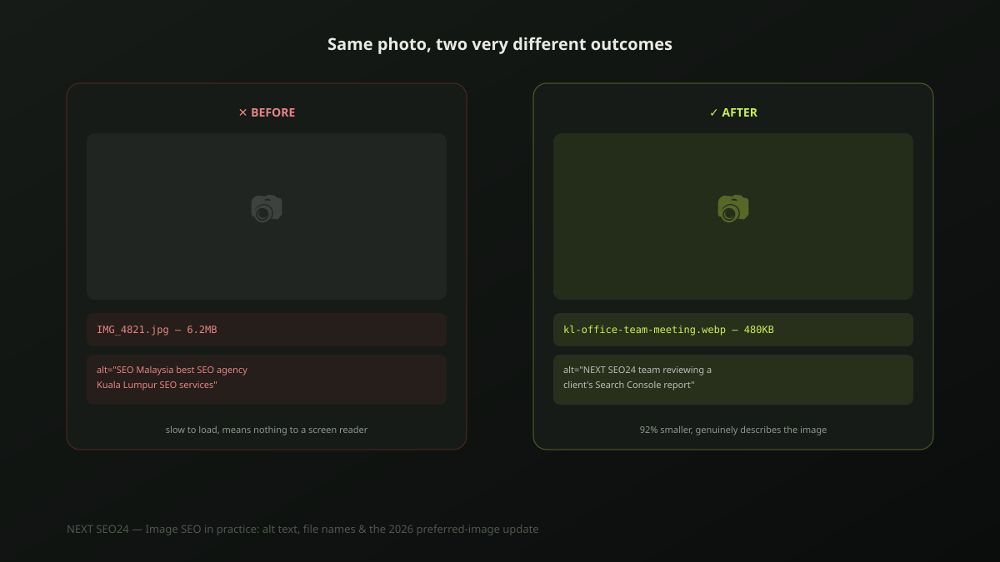

Image SEO in practice: alt text, file names and the 2026 preferred-image update
Most sites we audit still upload photos straight from a phone or camera, named "IMG_4821.jpg," with alt text either missing or stuffed with keywords that don't describe anything real. Every one of those is a small, fixable mistake — and together they add up to slower pages, invisible images and a missed, low-effort ranking opportunity. Here's what actually helps.
Why image SEO is worth the small effort
Image file size is one of the most common causes of a slow homepage, and page speed is a direct, measurable ranking factor through Core Web Vitals. Beyond speed, well-described images can appear in Google Images for visually-driven searches — before/after results, completed projects, product photos — a channel most SME sites leave completely untouched simply because nobody named the files or wrote the alt text properly.
Alt text that actually helps — not keyword stuffing
Alt text exists first for accessibility: it's what a screen reader reads aloud to someone who can't see the image. Write it as an honest, specific description of what's actually shown — the keyword should appear only if it genuinely describes the image, never forced in.
<!-- Bad: keyword-stuffed, describes nothing real -->
<img src="photo1.jpg" alt="SEO Malaysia best SEO agency Kuala Lumpur SEO services">
<!-- Good: specific, honest, genuinely descriptive -->
<img src="kl-office-team-meeting.jpg"
alt="NEXT SEO24 team reviewing a client's Search Console report in our Kuala Lumpur office">The bad example fails twice: it's meaningless to a screen-reader user, and Google recognizes keyword-stuffed alt text as a spam signal, not a ranking boost. The good example does its actual job for both audiences at once.
File names that actually help
"IMG_4821.jpg" tells Google and every future visitor nothing. Before uploading, rename image files descriptively, using hyphens rather than spaces or underscores: kl-office-cleaning-service.jpg instead of IMG_4821.jpg. It's a thirty-second habit per image that consistently gets skipped, and it's one of the few genuinely free, no-tool-required SEO wins left.
Compression and format: the numbers that actually matter
A photo straight from a modern phone camera commonly runs 3-8MB — five to ten times larger than what a web page actually needs to display it well. Converting to WebP typically cuts file size by 25-35% compared to JPEG at the same visual quality, and resizing to the actual maximum display width (rarely more than 1600px for a full-width hero image) often cuts it further. On a page with six or eight images, the difference between unoptimized originals and properly compressed WebP files is frequently the single biggest lever available for improving Largest Contentful Paint — the Core Web Vitals metric that measures how fast your main content appears.
The March 2026 preferred-image update
In March 2026, Google expanded guidance on preferred-image markup — giving sites a clearer way to specify which image should represent a page in search results and social shares, through a combination of structured data and the og:image tag, rather than leaving Google to guess from whatever image happens to be largest or first on the page. A working minimal example:
<meta property="og:image" content="https://example.com/img/service-hero.jpg">
{
"@context": "https://schema.org",
"@type": "Article",
"image": "https://example.com/img/service-hero.jpg",
"headline": "..."
}Both should point at the same real, representative image — not a generic placeholder or the site logo. This is also exactly the structured-data pattern every article on this site already follows; see our FAQ and HowTo schema implementation guide if you're setting up JSON-LD for the first time.
A pre-publish checklist
- Every image renamed to a descriptive, hyphenated filename before upload
- Alt text written as an honest description, not a keyword list
- Images converted to WebP where possible, resized to actual display width
- One clear, representative image set via
og:imageand matching structured data per page - Decorative images (icons, dividers) marked with empty
alt="", not skipped or mislabeled
If you'd like us to check how your current images are affecting page speed and search visibility, send us your site — it's a fast, concrete check to run.
Frequently asked questions
Does alt text need to include keywords to help SEO?
Only if the keyword genuinely describes what's in the image. Alt text's primary job is accessibility — describing the image to someone using a screen reader. Stuffing it with keywords that don't match what's actually shown reads as spam to Google and provides a false description to a real screen-reader user, which is worse than no keyword at all.
What image format should I actually use on my website?
WebP for almost everything — it produces files roughly 25-35% smaller than JPEG at equivalent visual quality, which directly helps page speed and Core Web Vitals. Keep PNG only for images that genuinely need transparency, like logos. Avoid uploading camera-original files straight from a phone; they're typically 5-10x larger than necessary for web display.
Does image SEO actually drive traffic for a service business, not just e-commerce?
Yes, though less directly than for a product-based business. Properly optimized images speed up your pages (a direct ranking factor) and can appear in Google Images for visually-driven searches — before/after service results, completed projects, team photos for trust signals. It's rarely a primary traffic source for a service business, but it's a real, low-effort contributor to both speed and discoverability.
Want your site's images checked for speed and search visibility?
Send us your site — we'll show you which images are slowing your pages down and what's missing from your alt text and markup.
Chat on WhatsApp →